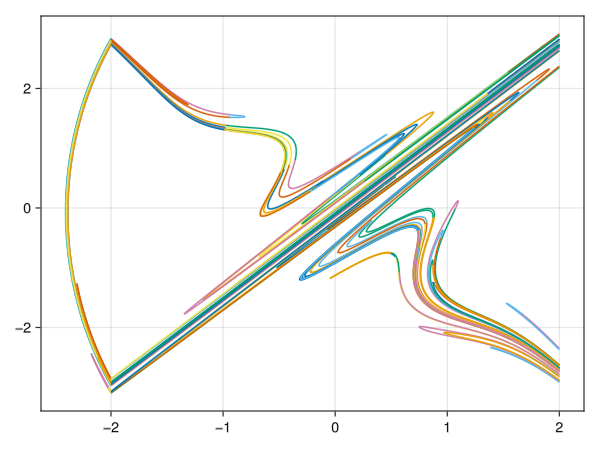

Extensions
We point out that the framework of this package about the non-smooth ODE is generic enough, so that one can easily extends it to compute kinds of non-smooth ODE's invariant manifolds.
To show how to extends the function generate_curves to other type of non-smooth ODE, we show how to deal with the systems with both impacts and piecewise smoothness.
using InvariantManifolds, LinearAlgebra, StaticArrays, OrdinaryDiffEq, GLMakie
import InvariantManifolds: State, JumpVectorField, setmap, _region_detect
struct PiecewiseImpactV <: JumpVectorField
fs::Vector{Function}
hypers::Vector{Function}
rules::Vector{Function}
regions::Vector{Function}
idxs::Vector{Int}
end
function (v::PiecewiseImpactV)(x, p, t)
n = Int(p[end])
v.fs[n](x, p, t)
end
function setmap(v::PiecewiseImpactV, timespan, alg, N, T; region_detect=_region_detect, extra...)
nn = length(v.hypers)
event_at = Int[]
event_state = SVector{N,T}[]
event_t = T[]
function affect!(integrator, idx)
if idx in v.idxs
integrator.u = v.rules[idx](integrator.u, integrator.p, integrator.t)
else
t0 = integrator.t + 1 // 20
u0 = integrator.sol(t0)
p = integrator.p
i = region_detect(v.regions, u0, p, t0)
p[end] = i
end
append!(event_at, [idx])
append!(event_state, [integrator.u])
append!(event_t, [integrator.t])
end
function condition(out, u, t, integrator)
for i in eachindex(v.hypers)
out[i] = v.hypers[i](u, integrator.p, t)
end
end
vcb = VectorContinuousCallback(condition, affect!, nn)
function tmap(State::State{N,T}, para) where {N,T}
x = State.state
para[end] = region_detect(v.regions, x, para, timespan[1])
prob = ODEProblem{false}(v, x, timespan, para)
sol = solve(prob, alg, callback=vcb; extra...)
newv_event_at = copy(event_at)
newv_event_t = copy(event_t)
newv_event_state = copy(event_state)
empty!(event_at)
empty!(event_t)
empty!(event_state)
NSState(sol[end], newv_event_t, newv_event_state, newv_event_at, State.s)
end
NSSetUp(v, timespan, tmap)
end
f1(x, p, t) = SA[x[2], p[1]*x[1]+p[3]*sin(2pi * t)]
f2(x, p, t) = SA[x[2], -p[2]*x[1]+p[3]*sin(2pi * t)]
hyper1(x, p, t) = x[1] - p[4]
hyper2(x, p, t) = x[1] + p[4]
dom1(x, p, t) = -p[4] < x[1] < p[4]
dom2(x, p, t) = x[1] < -p[4]
impact_rules(x,p,t)=SA[x[1],-x[2]]
id(x,p,t)=x
vectorfield = PiecewiseImpactV([f1, f2], [hyper1, hyper2], [impact_rules,id],[dom1, dom2], [1])
setup = setmap(vectorfield, (0.0, 1.0), Tsit5(), 2, Float64)
function timemap(x,p)
prob = ODEProblem{false}(f1, x, (0.0, 1.0), p)
solve(prob, Vern9())[end]
end
function jac(x,p)
prob = ODEProblem{false}(f1, x, (0.0, 1.0), p)
sol = solve(prob, Vern9())
function df(x, p, t)
SA[0 1; p[1] 0] * x
end
ii = SA[1.0 0.0; 0.0 1.0]
nprob = ODEProblem{false}(df, ii, (0.0, 1.0), p)
solve(nprob, Vern9())[end]
end
function newton(x,p; n=100, atol=1e-8)
xn = x - inv(jac(x,p) - I) * (timemap(x,p) - x)
data = [x, xn]
i = 1
while norm(data[2] - data[1]) > atol && i <= n
data[1] = data[2]
data[2] = data[1] - inv(jac(data[1],p) - I) * (timemap(data[1],p) - data[1])
end
if norm(data[2] - data[1]) < atol
println("Fixed point found successfully:")
data[2]
else
println("Failed to find a fixed point after $n times iterations. The last point is:")
data[2]
end
end
para = [2, 5, 0.6, 2, 1]
fixedpoint= newton(SA[0.0, 0.0],para)
unstable_direction = eigen(jac(fixedpoint,para)).vectors[:,2]
seg = segment(fixedpoint, unstable_direction, 150, 0.05)
result = generate_curves(setup, para, seg, 0.01, 9)
function manifold_plot(result)
fig = Figure()
axes = Axis(fig[1,1])
for k in eachindex(result)
for j in eachindex(result[k])
data=result[k][j].pcurve.u
lines!(axes,first.(data),last.(data))
end
end
fig
end
manifold_plot(result)